Coureurs
 |
 |
||
| Alain L. Pass' D1 |
Alexis B. Pass' D1 |
Alexis W. Junior |
Antoine M. 3e caté |
| 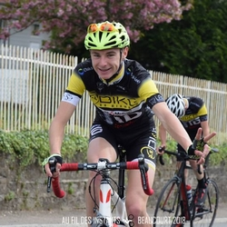 | |||
| Antony W. Junior |
Arnaud S. 2e caté |
Baptiste S. Pass' D1 |
Cédric M. S4 (FSGT) |
| 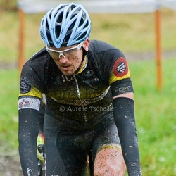 |  |
 |
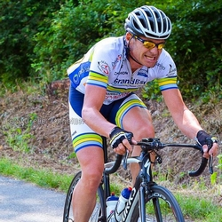 |
| Christophe D. Pass' D1 |
Claude K. V4 (FSGT) |
Claude S. Pass' D3 |
Daniel F. 3e caté |
| 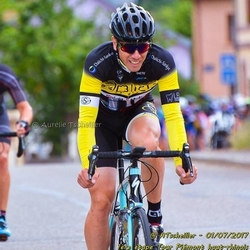 | 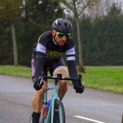 | 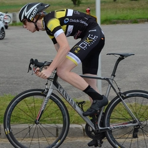 | |
| Eric H. 3e caté |
Fabian D. S4 (FSGT) |
Félix D. S3 (FSGT) |
Florian K. 2e caté |
 |
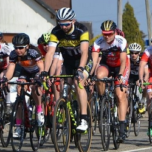 | 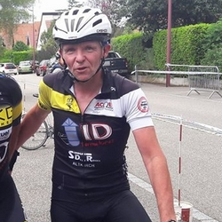 | |
| Florian V. Pass' D1 |
Franck D. VTT |
Gilles E. Pass' D4 |
Grégory W. S3 (FSGT) |
 |
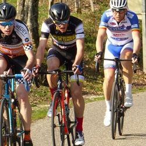 |  |
|
| Guillaume A. Pass' D1 |
Guillaume P. Pass' D1 |
Hugo Quentin M. 3e caté |
Jérôme H. 2ème caté |
 |
 |
 |
|
| Johann V. Junior |
José L. 3e caté |
Julien B. 3e caté |
Julien G. 2e caté |
 |
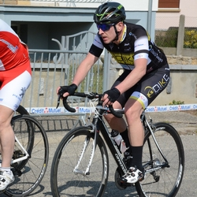 | ||
| Lionel B. Pass' D3 |
Ludovic K. 3e caté |
Maxence S. VTT |
Pascal S. Pass' D3 |
| 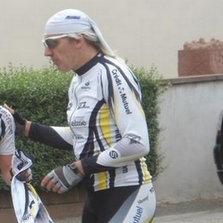 | 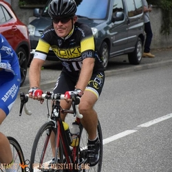 |  |
 |
| Patrick V. Pass' D4 |
Philippe W. Pass' D1 |
René S. Pass' D3 |
Santo F. 3e caté |
| 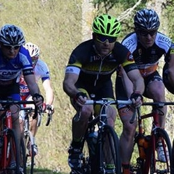 | 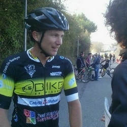 | 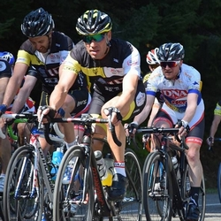 | 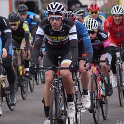 |
| Sébastien S. Pass' D3 |
Sönke W. Senior (FSGT) |
Stéphane M. V4 (FSGT) |
Thibaud P. 3e caté |
| 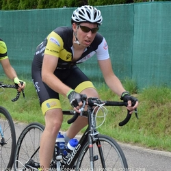 | 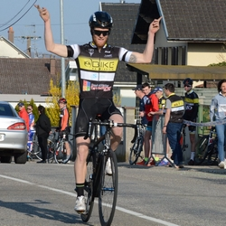 |  |
 |
| Thomas L. S4 (FSGT) |
Valentin T. 3e caté |
Alexandre N. Cadet |
Antoine C. Cadet |
 |
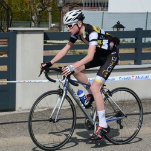 | 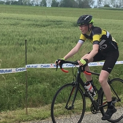 | |
| Clément B. Cadet |
Mathias G. Cadet |
Matthieu L. Minime |
Noah P. Minime |
| 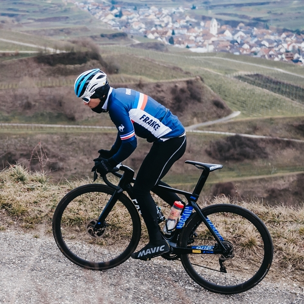 |
| Hugo Hofstetter Coureur professionnel - Team Cofidis |
Encadrement
| Denis C. Directeur Sportif |
René S. Entraîneur & Directeur Sportif |
Un grand merci à Aurélie Tscheiller, Au Fil des Instants et Tiiffanie , photo vélo pour les photos.